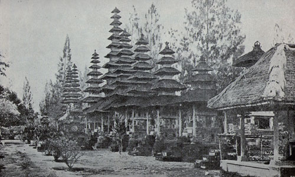

<!DOCTYPE html>
<html>
<body>

    <audio autoplay="autoplat">
        <source src="audio/y2mate.com - Gambelan PujaWaliOdalan  Bali  1 Jam  audio.mp3" type="audio/mp3">
        </audio>
    </body>
    </html>

    <h2>SEJARAH TENTANG BALI</h2>
<h3>Indonesia merupakan salah satu negara yang terdiri dari ribuan pulau. ada yang besar dan kecil, terdapat juga banyak pulau indah di dalamnya, termasuk juga terdiri dari bermacam-macam suku, termasuk juga budaya dan adat istiadat yang berbeda-beda, sehingga tidak mengherankan kepulauan Nusantara ini menjadi daya tarik wisata tersendiri. Wilayahnya membentang dari mulai dari ujung timur hingga ujung barat indonesia atau dari Sabang sampai Mearuke, tentunya juga terdapat banyak objek wisata yang sangat cantik dan menarik. Selain daya tarik wisata tentunya latar belakang sejarah akan sangat menarik untuk diketahui, seperti sejarah tentang pulau Bali.

</h3>
    
    <h3>Pada halaman ini, dikemas info menarik, sejarah tentang pulau Bali, yang mana mayoritas penduduk pulau ini adalah beragama Hindu yang memiliki budaya, tradisi dan keindahan seni yang beragam. Bali memang dikenal sebagai destinasi dunia untuk tujuan wisata, selain itu pulau Bali tergolong cukup kondusif dan lebih aman dengan berbagai sarana dan fasilitas lengkap, sehingga tidak mengherankan berbagai event atau pertemuan skala nasional dan internasional, sering digelar di pulau ini, namun demikian tahukah anda sekilas tentang sejarah pulau Bali tersebut, untuk itulah kami kemas informasinya dalam halaman ini.
        Pulau Bali menurut masyarakatnya disebut sebagai pulau suci, itu karena sesuai sejarahnya, yang mana diceritakan perjalanannya seorang pertapa suci dari Gunung Raung, di jawa timur, beliau bernama Rsi Markendeya. Pada abad ke-17 dalam pertapaannya beliau mendapatkan wahyu untuk pindah ke pulau Dawa, sebuah pulau yang memiliki arti panjang dan memang pulau ini memiliki wilayah yang panjang. Untuk tujuan ke pulau tersebut maka Rsi Markendeya meminta 800 orang pengikutnya untuk menemaninya menuju pulau Dawa atau pulau panjang ini.
        Perjalanan menuju pulau Dawa ini memang tidak mulus, terlalu banyak rintangan, mereka pun memulai perjalananya dan tibalah di Barat pulau ini, namun dalam perjalananya kurang lebih tiga perempat pengikut Rsi Markendeya ini meninggal dunia karena sepanjang perjalanannya, penyebabnya adalah mereka ada yang dimakan hewan buas seperti harimau dan ular besar yang terdapat dihutan, karena kejadian dan hal buruk tersebut terjadi mereka memutuskan untuk kembali ke gunung raung. Rsi Markandeya kembali memohon petunjuk, karena kegagalannya tersebut.
</h3>


<h2>Sejarah Pariwisata Bali</h2>

<h3>Bali adalah Pulau sejuta pesona. Sedari zaman Belanda, Bali telah menarik pelancong dari pelosok negeri. Budaya, alam, serta religiusnya Bali menjadi daya tarik. Namun, pariwisata bak bermata dua bagi Bali. Satu sisi mengangkat Bali di dunia. Sisi lain, pariwisata merusak Bali. Budaya Bali yang awalnya sakral, mulai berkompromi dengan komersialisme. Pun soal adat. Investasi seakan jadi dewa baru.

    Narasi kekhawatiran akan rusaknya Bali telah mengemuka sejak dulu. Pelukis kesohor, José Miguel Covarrubias, salah satunya. Covarrubias yang pernah menetap di Bali memandang Pulau Dewata sebagai surga. Bukti kecintaannya pada Bali dituangkan dalam mahakaryanya, Island of Bali (1937).
    Covarrubias kagum dengan segala hal tentang Bali, terutama kecantikan gadis-gadis Bali. Apalagi, gadis-gadis itu lebih suka bertelanjang dada sembari menjalankan aktivitas kehidupannya, seperti menari, membuat sesajen, menumbuk padi, pergi ke sawah, dan juga ketika menerima tamu.

    Kekaguman itu semakin bertambah kala Covarrubias mulai terpana pada alam Bali, tarian, rumah, dan hampir segalanya. Kekaguman itu berbuah banyak karya.
    
    Tak sekadar potret Bali dalam kanvas, Covarrubias juga mengabadikannya dalam kata-kata. Tetapi, kekagumannya pada Bali sama besarnya dengan kekhawatirannya akan rusaknya Bali dikemudian hari.
    
    Covarrubias merekam kekhawatirannya dalam satu kalimat: Bali akan rusak jika pelancong semakin banyak datang.
    
    “Kekhawatiran saat ini adalah Bali mengalami pergeseran nilai. Arus deras kebudayaan dari luar, entah itu Barat, Timur, atau Indonesia non-Bali, melanda berbarengan dengan mengalirnya duit yang dibawa wisatawan. Para pelancong jelas membawa nilai baru. Dan ini bersentuhan dengan adat Bali. Tak heran jika sebagian orang, baik orang Bali maupun orang luar Bali, selalu cemas, adat yang sedemikian kukuh dan eksotis ini lama-lama bakal terkikis juga,” tertulis dalam laporan Majalah Tempo berjudul Kompromi Budaya, Wisata, dan Bisnis (1991).
    Ada transisi, terutama di sektor sosial budaya. Kala dahulu masyarakat Bali lebih berpegang kepada ritual komunalistik, berubah menjadi individualis, ekonomis, demokratis, dan efisien.

    Perubahan itu sampai menyentuh hasil budaya dan kesenian. Apalagi, diperburuk dengan banyaknya pertentangan adat dan pariwisata. Imbasnya, makin terbatasnya penggunaan tempat-tempat tertentu untuk acara ritual masyarakat Bali.
    
    Pantai, misalnya. Adapula ragam gangguan lain, seperti kehadiran orang setengah telanjang atau sedang mandi di tengah upacara tersebut.Pemandangan itu amat menjengkelkan buat orang bali. Belum lagi, terkait akses ke laut yang sering dihalang-halangi oleh kehadiran hotel-hotel.

</h3>

